FBAUL
2024-
Some of my favorite projects from the past two years in Communication Design at the Faculty of Fine Arts in Lisbon.
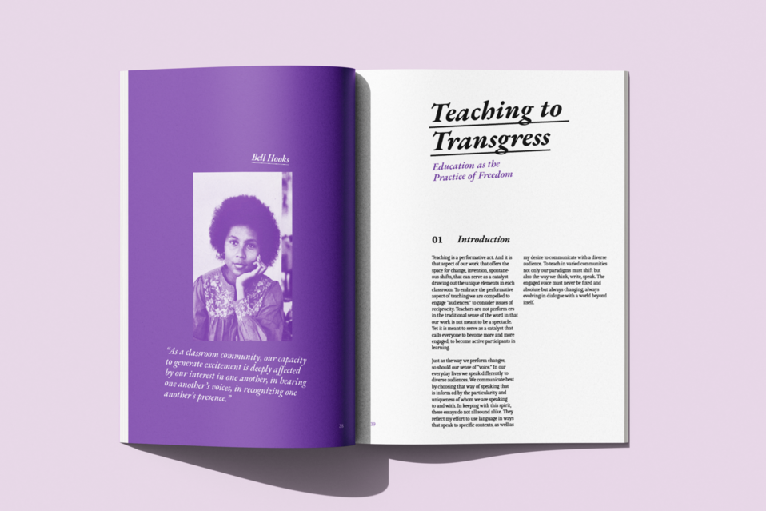
Decolonize Design
Collection of texts about education and Black history
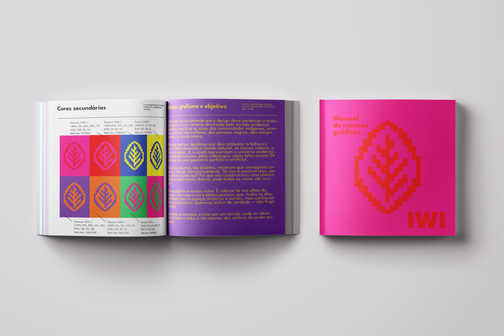
Graphic standards manual
Graphic standards manual for the "Inclusive World Intervention"
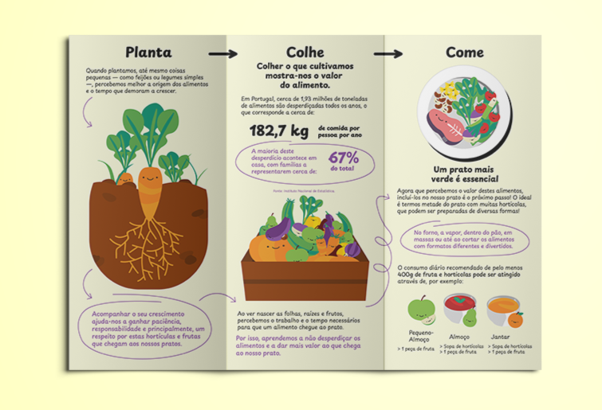
3 passos para uma alimentação mais sustentável
Information design leaflet made in Illustrator
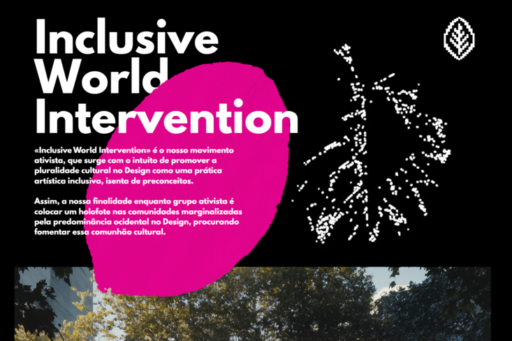
Inclusive World Intervention website
Website for Inclusive World Intervention and sound editing and video editor
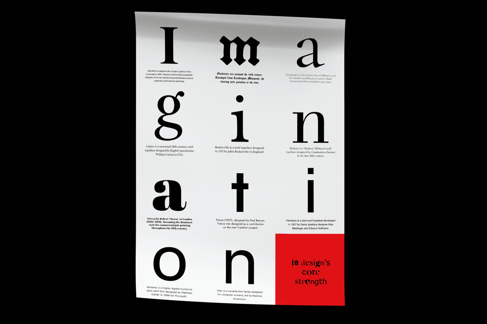
Imagination
Poster: "Imagination is design's core strength"
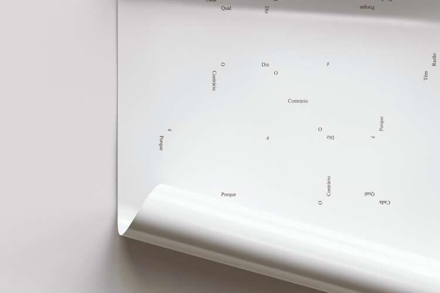
Poster
"Se cada qual diz o contrário é porque tem razão"
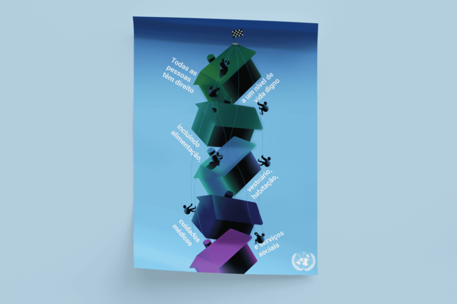
Article nº25 - UN
Poster about housing rights
Motion project
"Se cada qual diz o contrário é porque tem razão"
PNA
Volunteer work
(2022-2024)
During secondary school, I volunteered as a designer for a project called PNA, integrated in my school, aiming to bring culture and the arts to the service of society and education.
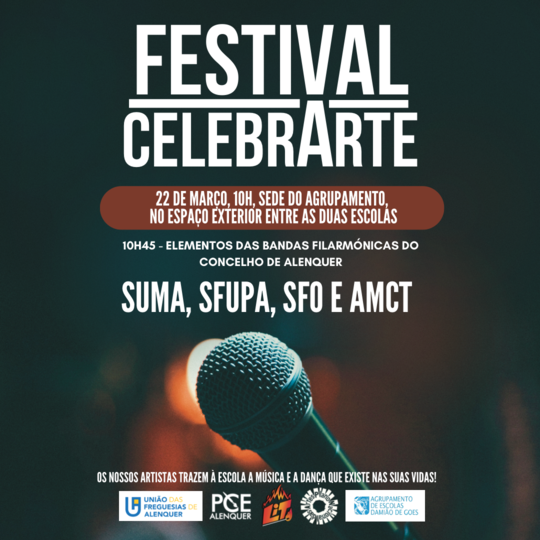
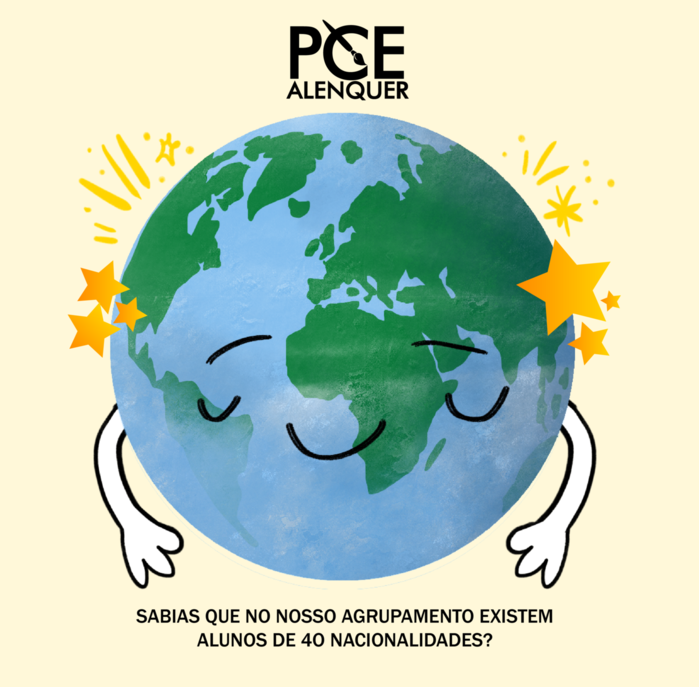
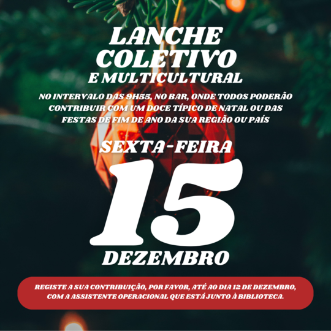
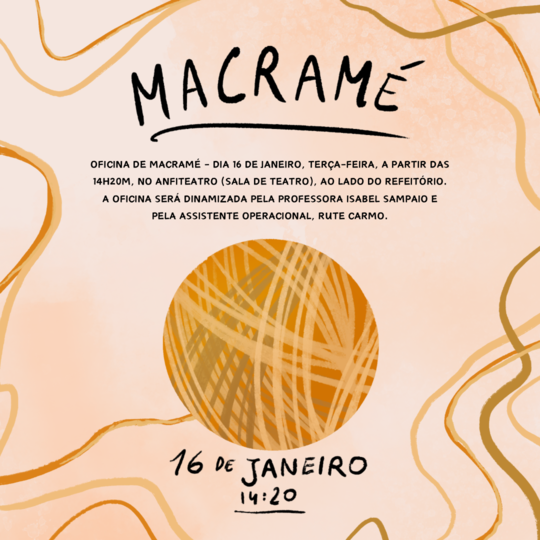
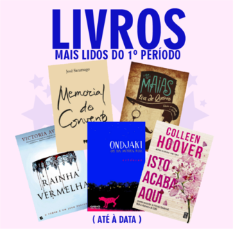
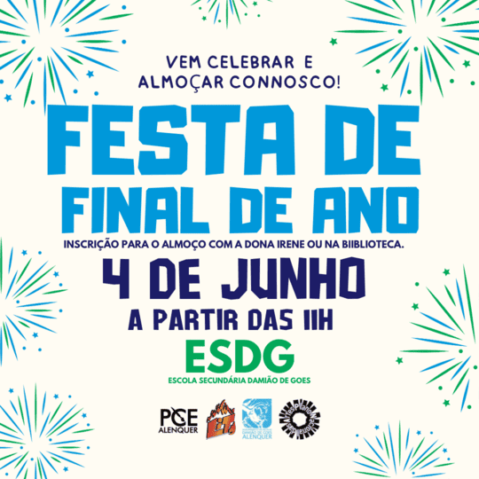
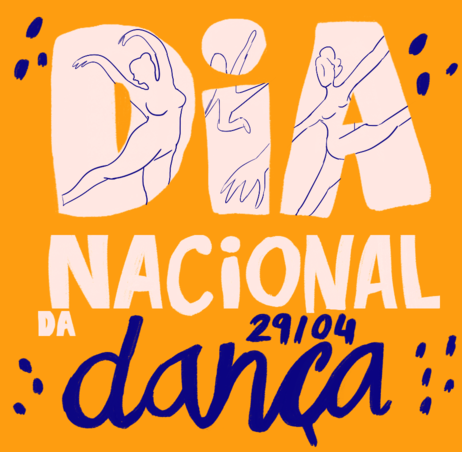
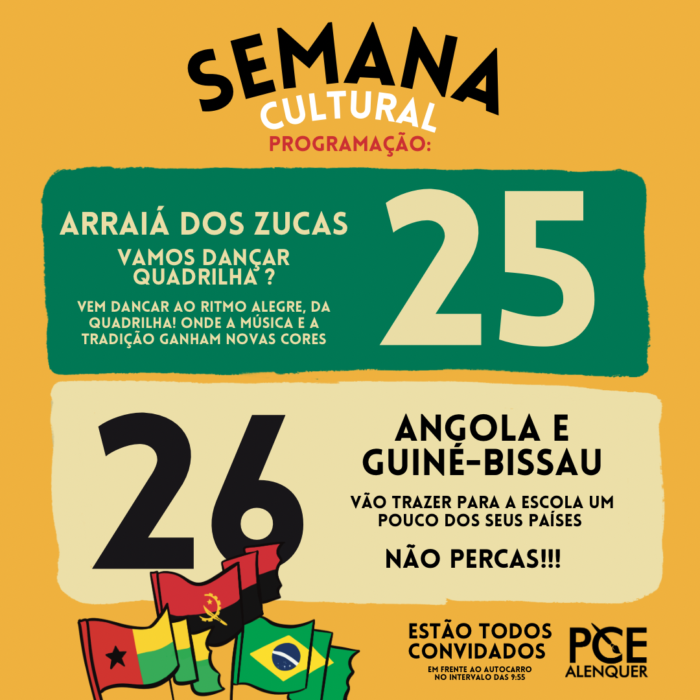

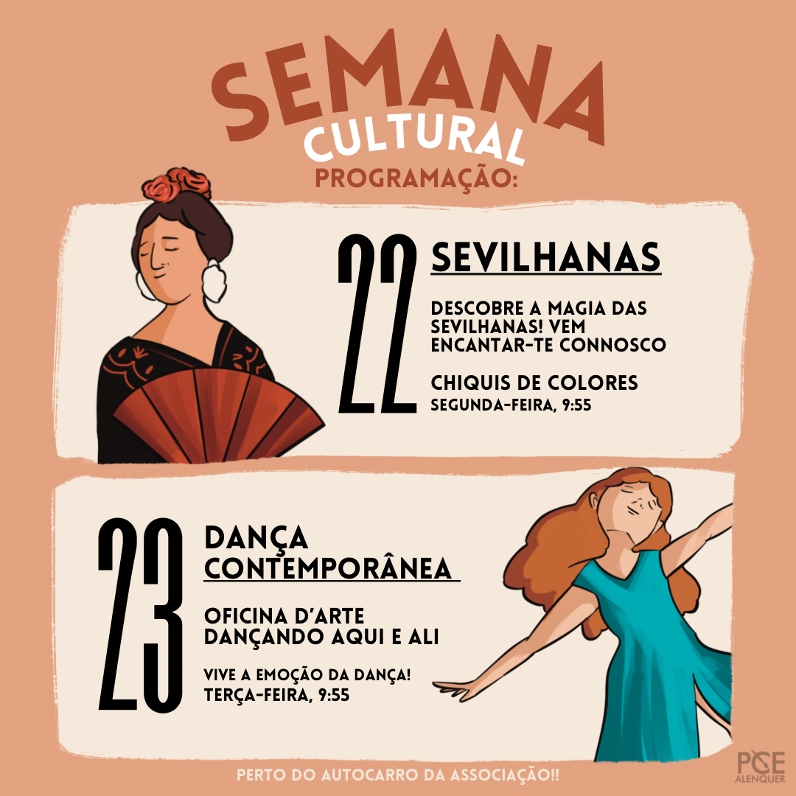

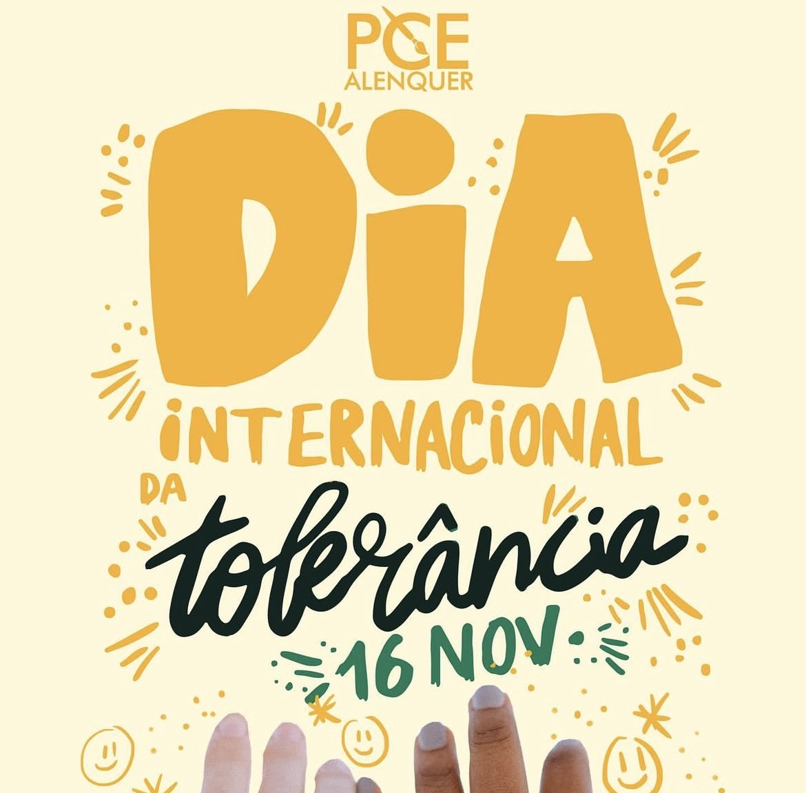